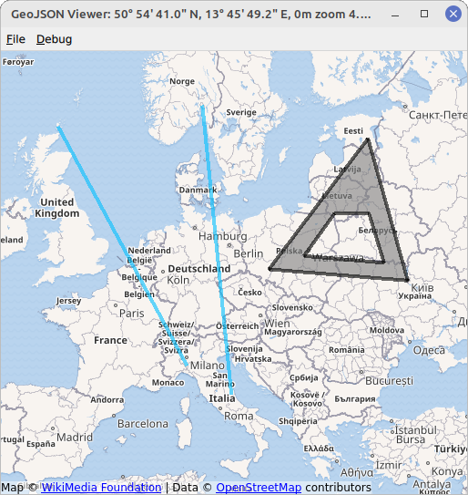

GeoJson Viewer (C++/QML)
The GeoJson viewer example demonstrates how to manipulate MapItems, handle user input and I/O to and from a GeoJson file.

The example displays a map with various MapItems. The MapItems are either imported from a GeoJson file, using the QGeoJson API of QtLocation or drawn by the user using TapHandlers.
Examples for GeoJson files can be found in the directory data within the example directory. They are read and written using the importGeoJson and exportGeoJson functions.
To draw a MapItem, right click on an empty part of the map and select an item type of your choice in the appearing menu. The next clicks will define the chosen item. The example allows to draw MapCircles, MapRectangles, MapPolygons and MapPolylines. Items that are fully defined by two points, i.e. circles and rectangles, are drawn with two clicks of the left mouse button. Items that are defined by multiple points, i.e. polygons and polylines, are created by an arbitrary amount of left button clicks and completed with the right mouse button. Items drawn this way are saved as points, polygons and polylines to fit the GeoJson specification, see https://geojson.org/.
Running the Example
To run the example from Qt Creator, open the Welcome mode and select the example from Examples. For more information, visit Building and Running an Example.
Creating a MapView
First we create a base map on which all items can be placed on. We take advantage of a MapView element that combines a basic Map with input handling (mouse wheel, drag, etc.). The underlying Map can be accessed with map property. If you miss a property in MapView it can be most likely accessed with MapView.map.
MapView { id: view anchors.fill: parent map.plugin: Plugin { name: "osm" } map.zoomLevel: 4
Setting up the GeoJson Model / Display MapItems
In order to display file contents on the map we will use a design pattern known as Model/View Programming. First we need to set up a suitable view, in this example a MapItemView element. Its parent must be set to the underlying map of the MapView to correctly display all items placed in it.
MapItemView { id: miv parent: view.map
Next we need a suitable model, representing a GeoJson file. The GeoJson file is converted into a tree of QVariantMaps and QVariantLists within a C++ class in this example.
class GeoJsoner: public QObject { Q_OBJECT Q_PROPERTY(QVariant model MEMBER m_importedGeoJson NOTIFY modelChanged)
The class contains a member model which will be set after reading a GeoJson file.
QVariantList modelList = QGeoJson::importGeoJson(loadDoc); m_importedGeoJson = modelList; emit modelChanged();
The class is made available to the QML Engine to further process the model in QML.
qmlRegisterType<GeoJsoner>("Qt.GeoJson", 1, 0, "GeoJsoner");
The model property of the MapItemView element can then be set to the QVariant representation of the model:
model: geoJsoner.model
Finally we need a delegate, translating the model data into a representation of items, filling the MapItemView. It is set to the delegate property of the MapItemView:
delegate: GeoJsonDelegate { }
We use a DelegateChooser element defined the file GeoJsonDelegate.qml to take into account the varying representation of different geometry types of GeoJson objects.
DelegateChooser { id: dc role: "type"
Various DelegateChoices are included, each representing a different geometry type to be found in a GeoJson file. The property role will be matched with DelegateChoice.roleValue to determine the correct delegate.
As an example, a point, described with "type":"Point" in GeoJson, is represented by a MapCircle on the MapItemView:
DelegateChoice { roleValue: "Point" delegate: MapCircle { property string geojsonType: "Point" property var props: modelData.properties geoShape: modelData.data radius: (props && props.radius) || 20*1000 border.width: 2 border.color: hh.hovered ? "magenta" : Qt.darker(color) opacity: dc.defaultOpacity color: (props && props.color) || (parent && parent.props && parent.props.color) || dc.defaultColor
Properties of the MapCircle, such as color or radius are attempted to be read from the GeoJson file that is available in form of the modelData property. However, this is not a strict standard of GeoJson and fallback values are set for all properties.
Writing MapItems to GeoJson
To write MapItems to a GeoJson file we first will convert the Mapitems into a representation of QVariantMaps and QVariantLists. This is conducted in C++ in this example, as part of the GeoJsoner class used before:
Q_INVOKABLE QVariantList toVariant(QDeclarativeGeoMapItemView *mapItemView) { QVariantList res; QDeclarativeGeoMapItemView *root = mapItemView; QVariantMap miv = extractor::toVariant(root); if (!miv.isEmpty()) res.append(miv); return res; }
extractor is a helper class that converts Mapitems into QVariant representations, for example the MapCircle:
static QVariantMap toVariant(QDeclarativeCircleMapItem *mapCircle) { QVariantMap pt; pt["type"] = "Point"; pt["data"] = QVariant::fromValue(mapCircle->geoShape()); QVariantMap propMap = mapCircle->property("props").toMap(); propMap["radius"] = mapCircle->radius(); pt["properties"] = propMap; return pt; }
In a second step the QVariant representation can be dumped into a file using QJsonDocument.
Q_INVOKABLE void dumpGeoJSON(QVariantList geoJson, QUrl url) { QJsonDocument json = QGeoJson::exportGeoJson(geoJson); QFile jsonFile(url.toLocalFile()); jsonFile.open(QIODevice::WriteOnly); jsonFile.write(json.toJson()); jsonFile.close(); }
The two C++ functions that are required for writing files can be called from QML, thanks to the definition as Q_INVOKABLE:
onAccepted: { geoJsoner.dumpGeoJSON(geoJsoner.toVariant(miv), fileWriteDialog.selectedFile); }
Note that we could use geoJsoner.model instead of rebuilding the QVariant representation. However, the latter is done for demonstration purposes here.
User Interaction with MapItems
To handle user interactions we will use PointHandlers. They are especially well suited for the task as they conform to the exact shape of the underlying item, in contrast to MouseArea, which always covers a square shape. MapItems that are imported from a GeoJson file get their own HoverHandler and TapHandler directly in the delegate:
TapHandler { onTapped: { if (props !== undefined) console.log(props.name) else if (parent.parent.geojsonType == "MultiPoint") console.log(parent.parent.props.name) else console.log("NO NAME!", props) } } HoverHandler { id: hh }
The TapHandler is used to write some information about the item on the console when the item is tapped. The HoverHandler is used to highlight items that lie beneath the mouse pointer. This is implemented by describing the property border.color depending on the property / state hovered of the HoverHandler.
Adding new Items
A combination of HoverHandler and TapHandler for the MapView allows us to react to mouse movements and clicks by the user.
If the TapHandler emits a singleTapped signal, we will create or modify a new MapItem on LeftButton and finish the MapItem on RightButton. If there is no item to finish then the RightButton will open a menu.
onSingleTapped: (eventPoint, button) => { lastCoordinate = view.map.toCoordinate(tapHandler.point.position) if (button === Qt.RightButton) { if (view.unfinishedItem !== undefined) { view.finishGeoItem() } else mapPopupMenu.show(lastCoordinate) } else if (button === Qt.LeftButton) { if (view.unfinishedItem !== undefined) { if (view.unfinishedItem.addGeometry(view.map.toCoordinate(tapHandler.point.position), false)) { view.finishGeoItem() } } } }
The pointChanged signal is used to temporarily update a MapItem, giving the user a preview.
HoverHandler { id: hoverHandler property variant currentCoordinate grabPermissions: PointerHandler.CanTakeOverFromItems | PointerHandler.CanTakeOverFromHandlersOfDifferentType onPointChanged: { currentCoordinate = view.map.toCoordinate(hoverHandler.point.position) if (view.unfinishedItem !== undefined) view.unfinishedItem.addGeometry(view.map.toCoordinate(hoverHandler.point.position), true) } }
Mapitems are generated from prototypes that are defined in separate qml files. They are created using the createComponent function and added to the map with addMapItem. A reference to the new item is stored for further manipulation by the user.
function addGeoItem(item) { var co = Qt.createComponent('mapitems/'+item+'.qml') if (co.status === Component.Ready) { unfinishedItem = co.createObject(map) unfinishedItem.setGeometry(tapHandler.lastCoordinate) unfinishedItem.addGeometry(hoverHandler.currentCoordinate, false) view.map.addMapItem(unfinishedItem) } else { console.log(item + " is not supported right now, please call us later.") } }
Adding the item to the Map is sufficient to display the item. However, in order to further use the item (e.g. saving it to a file), it has has to be registered with the model. This is done after editing is finished:
function finishGeoItem() { unfinishedItem.finishAddGeometry() geoJsoner.addItem(unfinishedItem) map.removeMapItem(unfinishedItem) unfinishedItem = undefined }
The class GeoJsoner converts the new item into a QVariant representation and inserts the respective result into the existing QVariant representation of all items:
Q_INVOKABLE void addItem(QQuickItem *item) { QVariant entry; if (QDeclarativePolylineMapItem *polyline = qobject_cast<QDeclarativePolylineMapItem *>(item)) { entry = extractor::toVariant(polyline); } else if (QDeclarativePolygonMapItem *polygon = qobject_cast<QDeclarativePolygonMapItem *>(item)) { entry = extractor::toVariant(polygon); } else if (QDeclarativeCircleMapItem *circle = qobject_cast<QDeclarativeCircleMapItem *>(item)) { entry = extractor::toVariant(circle); } else if (QDeclarativeRectangleMapItem *rectangle = qobject_cast<QDeclarativeRectangleMapItem *>(item)) { entry = extractor::toVariant(rectangle); } else { return; } QVariantList geoJson = m_importedGeoJson.toList(); if (!geoJson.isEmpty()){ QVariantList geoData = (geoJson[0].toMap()["type"] == "FeatureCollection") ? geoJson[0].toMap()["data"].toList() : geoJson; geoData.append(entry); geoJson[0] = QVariantMap{{"type", "FeatureCollection"}, {"data", geoData}}; } else { geoJson.append(entry); } m_importedGeoJson = geoJson; emit modelChanged(); }
Removing Items
To remove all items from the map, we simply reset the model to an empty QVariantList. This is possible because we registered all new items with the model and items not added to the mode will not be affected. This is implemented in C++,
Q_INVOKABLE void clear() { m_importedGeoJson = QVariantList(); emit modelChanged(); }
and executed from QML
function clearAllItems() { geoJsoner.clear(); }